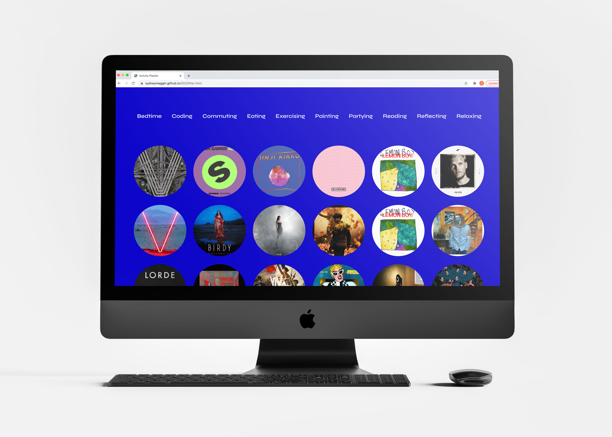
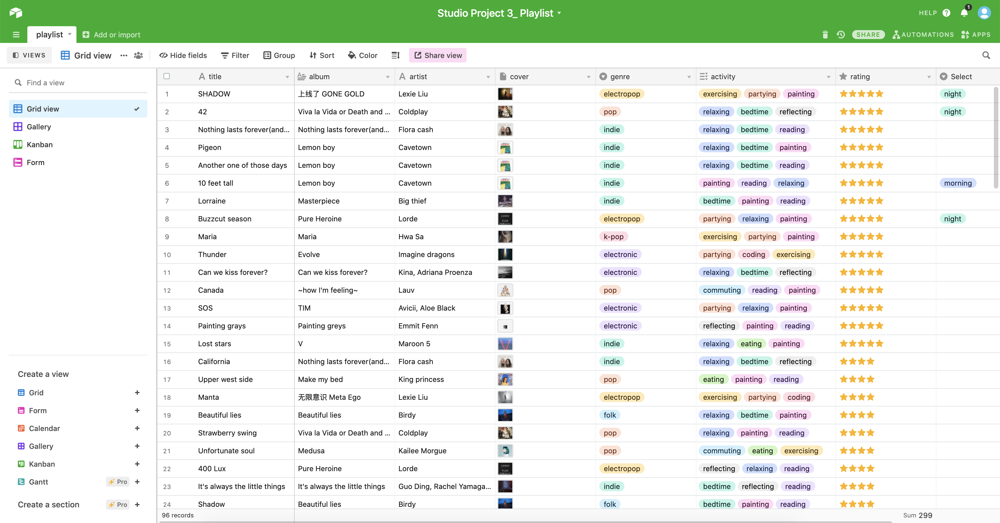
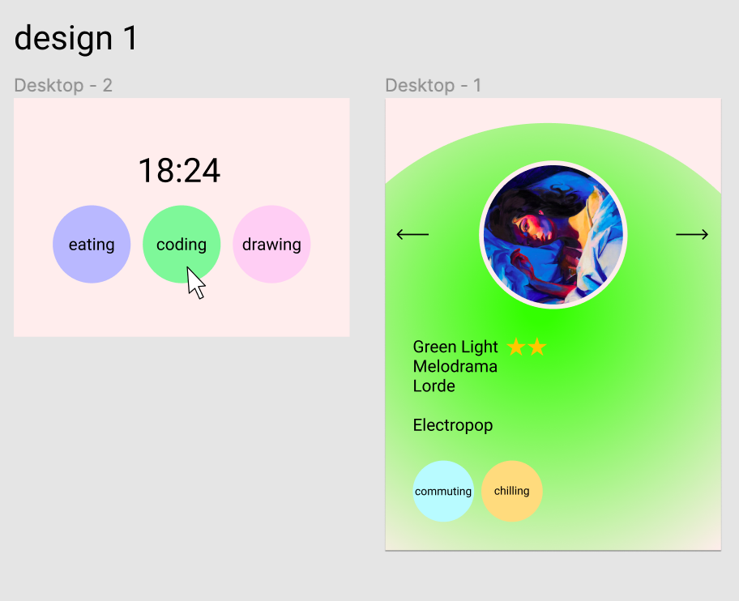

Song Finder: Jonga's Activity Playlist
This site is meant to help you choose what to listen to when you cannot decide! First, select what activity you are doing, then browse the filtered songs and see which ones you like best. Feel free to explore the other filters, and check out all the songs that Jonga recommends!
Process
 I got the dataset for this website from my partner, Jonga Fan. Jonga compiled a playlist of songs, and then sorted them by genre, rating, and activity that he listens to them during. I was then given the set and had to choose how I best thought the data could be shared. I decided to create a website that allows the user to sort through the songs based on what activity they are doing. I included images of Jonga's airtable along with my initial figma iteration.